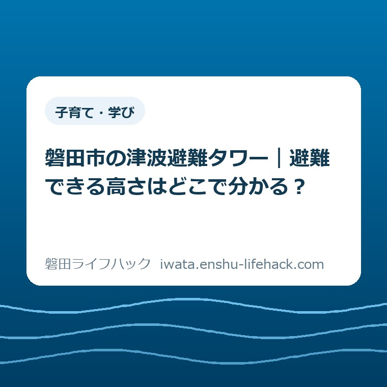

子育て・学び
磐田市の津波避難タワー｜避難できる高さはどこで分かる？

この記事の要点
Q. 磐田市の津波避難タワーで、人が避難できる場所の高さはどこを見れば分かる？
A. 磐田市の「津波避難施設一覧 公共施設」で、施設名の下にある「海抜（避難利用階）」を見ます。渚の交流館津波避難タワーは海抜17m、浜部津波避難タワーは海抜12.3mです。地面から上る高さと海抜には基準の違いがあり、タワーの最高部と避難に使える場所の高さも施設によって異なります。
地図でタワーを見つけた。その先は施設表のどこを見る？
家族と海辺へ出かける前に、地図を広げ、近くにある津波避難タワーの名前まで確かめた。その手間には意味があります。場所を知ったからこそ、次に「私たちが立てる所は、どのくらいの高さなんだろう」と尋ねられます。答えは施設ごとに違います。磐田市の資料では、地図の続きを別のページで読む仕組みです。
2026年11月5日は木曜日で、「津波防災の日」です。国の令和8年度の案内が主な実施期間としているのは、10月28日から11月12日までの16日間。家庭で日頃の備えを見直す機会として、ここでは市の一覧から一基の数字を拾ってみます。警報が出てから検索するための案内ではなく、平時に読んでおくためのものです。
市公式の入口は「磐田市内の津波避難施設一覧」です。開くと、民間施設、公共施設、津波避難施設位置図という三つの行き先があります。福田の渚の交流館津波避難タワーと、磐田地区の浜部津波避難タワーは、どちらも公共施設のページに載っています。施設名をすでに知っていれば、地図をもう一度開く手間は要りません。
反対に、場所は指させても名前が分からないときは、市の「津波避難施設位置図」へ。2026年3月25日更新のページには東エリアと西エリアの地図があります。位置を調べる画面と、同じ場所の高さを読む画面を分けて考えると、スマートフォンで大きな地図を拡大したまま、小さな高さの数字を探し続けずに済みます。
三つの「海抜」は、同じ物差しを別の位置に当てた値
公共施設のページを開くと、所在地、構造、階数、階段と続き、その下に海抜が三つ並びます。最初の括弧は「地盤」、次が「避難利用階」、最後が「最高部」です。三つとも単位はメートルです。単位だけを見ても区別はつきません。どの場所を測った数字かを教えてくれるのは、まさにこの括弧の中です。
地盤はタワーの建つ地面の高さです。海のそばの施設だからといって、その足元が必ず海抜ゼロというわけではありません。地盤にすでに高さがあるため、避難利用階の海抜をそのまま階段で上る高さに置き換えると、足元から海面までの分も上る計算になってしまいます。地形と建物を一緒に眺めると分かりやすいところです。
避難利用階は、市の一覧で避難に利用する場所について示した高さです。「階」と書いてあるので、何階まで上るかを数字で答えてくれると思うかもしれません。ところが二基とも、階数の欄には「タワー」とあり、避難利用階の欄にはメートルで標高が記されています。「17」という数字を階数として読むところではありません。
最高部は施設の最も高い部分を示します。高さの紹介でひとつ数字を載せるなら最大のものを選びたくなりますが、家族の質問は「てっぺんはどこか」ではなく「人が避難する所はどこか」です。二つが重なる施設もあります。重なるかどうかは一基ずつ施設表を見るまで分からない、というのが磐田の二例から読み取れることです。
福田地区・渚の交流館では、避難利用階が海抜17m
市の公共施設一覧で「ホ 福田地区：渚の交流館津波避難タワー」を探してみてください。所在地は磐田市豊浜4127-43。交流館という建物の名前だけで検索した場合も、一覧の見出しが「津波避難タワー」まで続いていることを確かめると、どの施設についての説明を読んでいるかがはっきりします。
ここには地盤5m、避難利用階17m、最高部20mと書かれています。いずれも海抜です。たとえば家族が「豊浜のあのタワーは20mだって」と話していたら、数字そのものを訂正する必要はありません。「最高部なら20m。避難で使う場所は海抜17mだよ」と、抜けている欄の名前を戻せば話が通じます。
この三つを海面からの目盛りに置くと、地盤の5から避難利用階の17までは12m、さらに最高部の20までには3mの差があります。12mは市の掲載値から引き算した上下方向の差で、市が別に測って公表した階段の長さではありません。踊り場を通って実際に歩く距離や、上り切るまでの時間に換算することもできません。
17mと20mの間の3mが、建物のどの部材に当たるのか。この一覧の数値だけでは特定できません。家族の備えに必要なのは、その空間の構造を推理することより、避難利用階について市が明示している数字を取り違えずに伝えることです。現地の利用範囲を自分で広げる根拠に、最高部の値を使うことはできません。

磐田地区・浜部では、二つの欄に海抜12.3mが並ぶ
もう一方は「カ 磐田地区：浜部津波避難タワー」。市の一覧で所在地は磐田市浜部332-1です。数字は地盤2.3m、避難利用階12.3m、最高部12.3m。小数点以下は同じ「.3」ですが、地盤と避難利用階の間には10mの差があります。ここでも海面を出発点にした物差しと、地面を出発点にした物差しを分けてください。
浜部の資料を先に見た人が、「避難できる高さなら最高部を見れば分かる」と覚えるのは無理もありません。この一基だけなら、どちらを写しても同じ答えになるからです。ところが、その覚え方を豊浜に持っていくと、答えは3mずれます。同じ市の同じ種類の施設でも、欄をひとつ飛ばしてよいという共通の読み方はありません。
子どもに説明する場面を考えるなら、数字を丸めるより、指を置く場所を一緒に決めたほうが簡単です。「浜部は12mぐらい」と記憶する前に、施設名の下へ進み、「避難利用階」を指さす。そこには12.3mと載っています。覚えた数があいまいになっても、読む場所さえ分かれば同じ答えに戻れます。
二基の避難利用階の数字を横に並べる目的は、より大きい数字のタワーを選ぶことではありません。出発地点、そこからの経路、その時の状況は、施設の高さ表には含まれていません。ここで比較できるのは、資料の同じ欄が各施設について何を示しているかです。17と12.3を比べて、家族が目指す先の適否まで決めることはできません。
一覧と詳細PDFでは、載っている数字の組み合わせが違う
市の一覧には、各施設名の下に「詳細」というPDFへのリンクがあります。渚の交流館の資料を開くと、見出しは「津波避難施設台帳」。所在地は豊浜4127-43で、鉄骨造のタワー、利用範囲は屋上と記されています。ここで「どこを使うか」という言葉の説明を、市の一覧で見た海抜と組み合わせられます。
同じPDFの下のほうには「海抜（GL）」と「海抜（最高部）」があり、渚の交流館ではそれぞれ5.0mと20.0mです。ところが、一覧にあった17mに相当する独立した欄はありません。PDFを先に開いた人が20.0mを見つけるのは自然なことです。資料を読み違えたのではなく、知りたい数字が別の画面に掲載されています。
浜部のPDFでは施設名が「浜部タワー」と短く書かれ、所在地は「浜部332番地1」です。名称の表記が少し違っても、一覧の「浜部332-1」と住所を突き合わせられます。こちらも利用範囲は屋上。海抜の欄には地盤2.3m、最高部12.3mが載っています。避難利用階としても12.3mであることを確かめる資料は、市の公共施設一覧です。
「どちらも屋上なら、どちらも建物の最高部では」と考えたくなります。でも、利用範囲の「屋上」は場所の呼び名で、メートル数を定義する言葉ではありません。渚の交流館の屋上の利用を案内する資料と、避難利用階に17mを付した一覧は両立します。別々の資料が、それぞれ異なる質問に答えていると読むと迷いがほどけます。

地図の浸水深と、タワーの海抜を混ぜない
別の資料で津波の浸水深を見たことがあると、タワーの数字と同じ図に重ねたくなります。けれども、浸水深はその場所の地面から水面までの深さで、ここで読んでいる避難利用階は海面を基準にした高さです。同じ「m」の後ろに付いている言葉を落としてしまうと、違う出発点から測った数を同じ高さとして扱うことになります。
地図を読む目的も分けておけます。住まいを探す段階で、住所にどのような浸水想定があるかを読むのが住まい選びで洪水と津波のハザードマップを比べる記事です。こちらで扱う市の施設表は、もう名前が分かっている避難施設について、人が利用する場所の標高を取り出すために開きます。
数字が分かると、「この高さならどんなときでも足りるか」と聞きたくなります。ここで示した二基の表は施設の諸元で、特定の地震で生じる津波の高さや、一人ひとりが到達できる時刻を示す資料ではありません。施設表にある数だけで安全を保証したり、より高いほうへ遠回りする判断をしたりするのは、表が答えられる範囲を超えています。
家族で分担するなら、施設表の読み方を知ることと、普段いる場所からどう動くかを話すことは別の準備です。後者の話を始めるときには、防災訓練を機に家族で確かめることも参照できます。記事の日付は2026年9月6日です。過去の訓練の日程を、11月5日の行事と読み替えないようにしてください。
良い点と、注文したい点｜小さな画面で読んでみると
市の一覧の良い点は、二つの施設で地盤、避難利用階、最高部を同じ順に読めることです。別々のPDFを開き、それぞれの図面から人が立てそうな場所を推測する必要がありません。とりわけ、最高部と避難利用階が違う渚の交流館について、質問に対応する17mをひとつの見出しの中から取り出せる利点は大きいと思います。
注文したい点は、位置図を開いた人にも、この三つの欄のうちどれが家族の問いに答えるのか、入口で短く見えるようにしてほしいことです。名称を控え、地図を閉じ、一覧に戻り、似た言葉を読み分ける。慣れれば短い作業でも、片手で子どもの荷物を持ちながら携帯電話で読む人には、そのひと往復が手間です。
紙に印刷する場合にも、切り取る範囲で意味が変わります。数字の列だけを残した紙なら、17と20のどちらが避難利用階か、後で他の人には判断できません。市の情報を家族へ渡すときは、施設名と括弧付きの欄名を値の隣に残す。色の違いや上下の配置に頼らず読めるので、白黒で印刷しても意味が保てます。
大石の視点｜家族のメモには、何を一行残すか
大石浩之（磐田市／不動産業）です。私なら家族に一行を渡すとき、地盤からの高低差も添えるかで迷います。土地や建物を考える仕事では「足元からどれだけ高いか」にも意味があるからです。ただ、聞かれたのが「避難に使える所の高さ」なら、引き算で得た数を先に教えると、もとの資料に戻る際にかえって手間を増やします。
私の考えでは、家族のメモに残す数字は一つでいい。「渚の交流館津波避難タワー 避難利用階は海抜17m」。ここまでを一行にします。名前と用途と単位がそろえば、読んだ人が市の一覧のどこを見ればよいか分かります。20mも12mも間違った数ではありませんが、この質問の答えとしてその一行に同居させる理由はありません。
たとえば子どもが家族のメモを読み上げてくれたとして、「17メートル」と答えただけで暗記のテストを終えないで済みます。「何の17かな」と尋ねて、市の欄名を一緒に見ればよいからです。体験を通じて備えを話す際には親子で防災体験に参加する前の準備も参考になります。これは2026年10月の体験会を扱った記事です。
対案・結論｜身近な一基の「避難利用階」を指さす
今日は市の一覧を開き、身近な一基の避難利用階を指さしてみてください。地図で名前を調べた家族なら、その続きを一画面でできます。全施設の所在地や標高を覚える必要はありません。市のページを後日見直せるよう、家族のメモの末尾に「磐田市・公共施設一覧」と書いておけば、何の資料から拾った数字かも伝わります。
一覧を携帯電話で探すときは、ページ内検索に「17」や「12.3」を入れるより、先に「渚の交流館」や「浜部」と入れるほうが確実です。同じ数は別の欄にも現れますし、「福田地区」だけなら複数の施設が該当します。施設名と所在地が見えた所から下へ読み、その施設の見出しの内側で避難利用階を見つけてください。
遠くに暮らす家族へ送る場合は、地名を省かないのも一つの工夫です。たとえば「海辺のタワー、17m」というメッセージだけでは、受け手が浜部の資料を開いたときに12.3mとの違いを解けません。「磐田市豊浜」と施設名を添えれば、それぞれが別の施設を見ていたのか、その場で確かめられます。確認が一往復で済む書き方です。
よくある質問
市の地図で名前を見つけた後、どのページを開く？
市の「津波避難施設一覧 公共施設」を開き、施設名と所在地を照合します。同じ施設の「海抜（避難利用階）」が、避難に使う場所の標高です。
渚の交流館のタワーで、海抜20mまで上がれる？
市が避難利用階として示すのは海抜17mです。海抜20mは最高部の数値で、避難に使える高さを示す欄は別にあります。
浜部の海抜12.3mは、地面から上る高さ？
海抜12.3mは避難利用階の標高です。市の地盤欄は海抜2.3mなので、両者の高低差は10mです。階段を歩く距離はこの差からは分かりません。
家族と確かめたい一基が決まったら、最新の数値は磐田市公式の公共施設一覧で、施設名と「海抜（避難利用階）」を照合してください。
参考にした公式情報
- 磐田市｜津波避難施設一覧 公共施設（カ・ホ）（2026年11月5日確認）
- 磐田市｜磐田市内の津波避難施設一覧（2026年11月5日確認）
- 磐田市｜津波避難施設位置図（2026年11月5日確認）
- 磐田市｜渚の交流館の施設台帳（PDF・1ページ）（2026年11月5日確認）
- 磐田市｜浜部の施設台帳（PDF・1ページ）（2026年11月5日確認）
- 国の防災情報｜令和8年度「津波防災の日」について（2026年11月5日確認）
最終確認日：2026-11-05 ／ 本記事は公表情報と執筆者の見解を分けて記載しています。制度・数値・公開状況は変更される場合があるため、最新情報は磐田市公式ページでご確認ください。